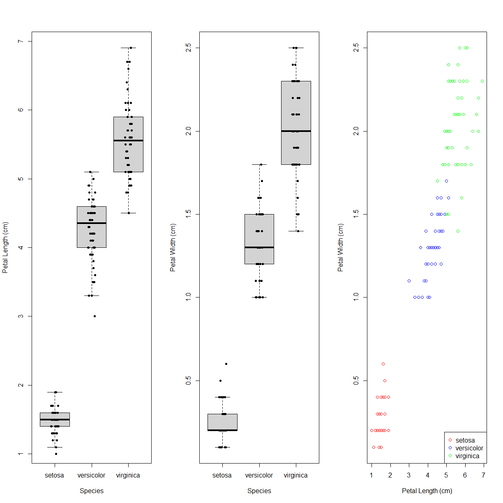
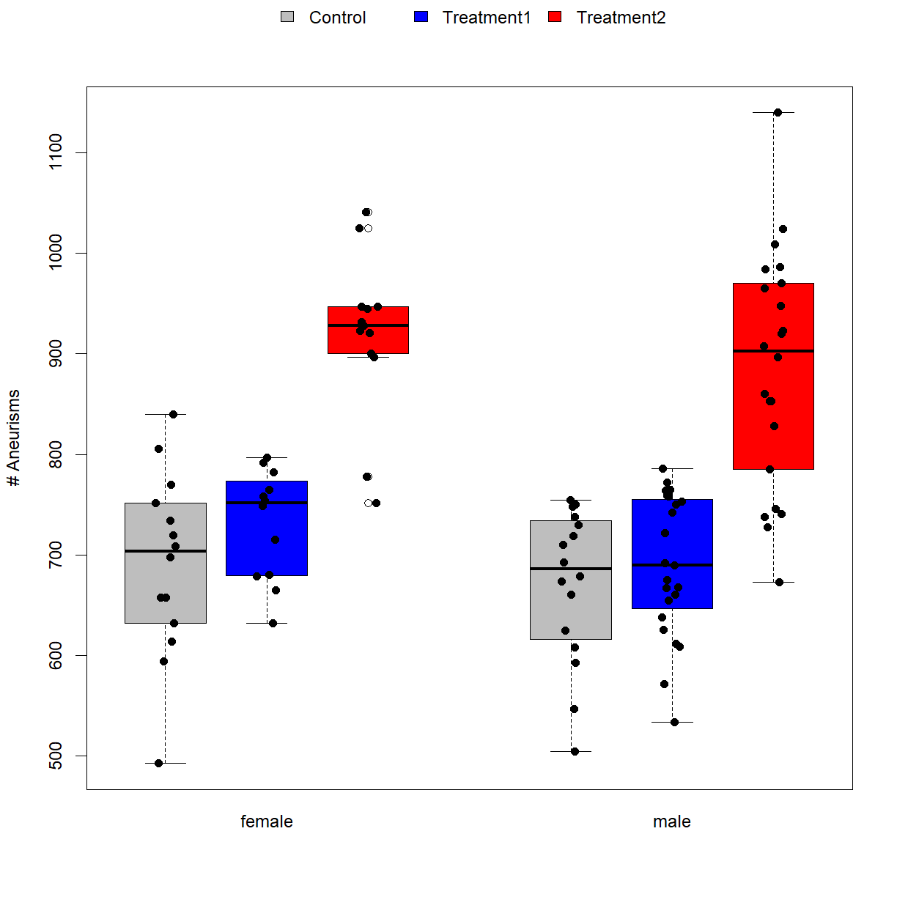
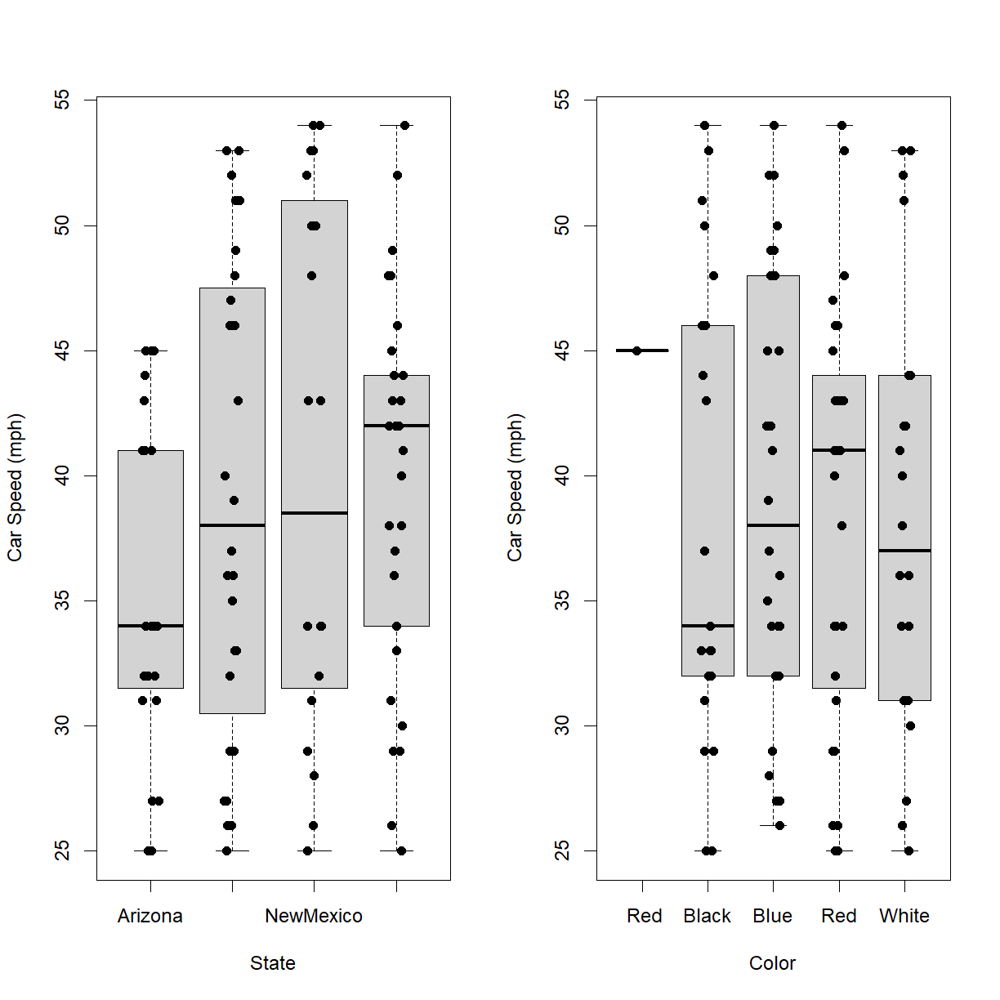

Advanced Data Manipulation and Plotting
Overview
Class Date: 9/4/2020 -- On Your Own
Teaching: 90 min
Exercises: 30 minQuestions
How do I rapidly calculate statistics based on relevant variables in a dataset?
How to I begin to build more complex graphics?
What tools are available for generating publication quality graphics in R?
Objectives
Use pre-build functions like
rowSums()to perform specific operations on data frame elements.Use the
apply()function to rapidly apply general functions across rows or columns of a data frame.Use the
aggregate()function to rapidly segregate dependent variables of interest by one or mor indpendent variables and calculate useful descriptive statistics.Locate and employ tools in R base graphics to generate custom graphics.
On Your Own
Advanced Data Manipulation
In Class we covered a few of the basic functions for calculating descriptive statistics. Here we will examine a few techniques for using these functions more efficiently across data sets.
The apply() function
To start, let’s reload the aneurisms dataset that we were using In Class, and specifically the version with the gender capitalization corrected:
dat <- read.csv(file="data/sample-gendercorrected.csv", header=TRUE, stringsAsFactors=FALSE)
In this dataset, we have aneurism counts in patient eyes at four time points. What if our phenotype of interest is the maximum number of aneurisms across quarters for each patient, or perhaps the average across quarters? How do we calculate these values efficiently for each patient. We want to perform the repeat the same operation across a margin of the data frame (in this case a each row, but it can similarly apply to columns):

In particular, we want to perform the functions max() or mean() on the last 4 columns of every row. To support this, we can use the apply() function.
?apply
apply() allows us to repeat a function on each of the rows (MARGIN = 1) or columns (MARGIN = 2) of a data frame. To obtain the maximum or average inflammation of each patient we will need to calculate the max or mean of all of the rows (MARGIN = 1) of the relevant subset of the dat data frame. Let’s start with mean:
avg_aneurisms_subject <- apply(dat[,6:9], 1, mean)
avg_aneurisms_subject
[1] 173.25 213.25 186.50 198.00 189.50 285.00 158.00 246.00 196.25 177.25
[11] 189.75 224.25 188.00 156.25 187.00 169.75 178.75 213.25 168.75 170.00
[21] 180.00 133.50 230.25 225.00 187.50 165.25 246.50 187.25 126.25 174.50
[31] 169.75 173.00 207.00 188.25 172.50 164.50 236.75 252.25 167.00 242.50
[41] 191.25 156.50 179.75 180.50 148.50 260.25 184.50 177.50 187.50 193.00
[51] 168.25 158.00 189.50 236.25 184.50 188.00 188.75 230.00 166.75 123.25
[61] 201.50 194.50 195.50 163.75 256.25 185.50 232.00 164.50 224.25 136.75
[71] 215.00 182.50 188.50 165.25 241.25 230.75 191.25 196.50 191.00 192.50
[81] 227.00 153.00 182.00 237.00 185.25 210.00 153.50 199.25 159.50 152.00
[91] 236.75 256.00 183.50 166.25 148.25 168.50 233.00 152.25 230.75 143.00
Each element in the avg_aneurisms_subject vector is the mean of the four values in the Aneurisms_q1, Aneurisms_q2, Aneurisms_q3, and Aneurisms_q4 columns for the corresponding row in the dat data frame. Note that the length of this vector is the same as the number of rows in the dat data frame:
length(avg_aneurisms_subject)
[1] 100
dim(dat)[1]
[1] 100
A convenient way to associated this data with the corresponding patient is to directly add the calculated data to the data frame in a new column instead of assigning it to a separate vector:
dat$Aneurisms_avg <- apply(dat[,6:9], 1, mean)
By changing to MARGIN = 2 (calculate across columns), we ask a different question, namely what is the average number of aneurisms across patients for each quarter:
avg_aneurisms_quarter <- apply(dat[,6:9], 2, mean)
avg_aneurisms_quarter
Aneurisms_q1 Aneurisms_q2 Aneurisms_q3 Aneurisms_q4
158.84 168.03 219.85 217.94
Maximum aneurisms
Determine the maximum and total number of aneurisms for each patient and add these values to the data frame. Save the results to a new file called “sample-processed.csv”.
Solution
First calculate the relevant descriptive statistics and add them directly to the
datdata frame using theapplyfunction.dat$Aneurisms_max <- apply(dat[,6:9], 1, max) dat$Aneurisms_total <- apply(dat[,6:9], 1, sum)Check the output:
head(dat)ID Gender Group BloodPressure Age Aneurisms_q1 Aneurisms_q2 1 Sub001 M Control 132 16.0 114 140 2 Sub002 M Treatment2 139 17.2 148 209 3 Sub003 M Treatment2 130 19.5 196 251 4 Sub004 F Treatment1 105 15.7 199 140 5 Sub005 M Treatment1 125 19.9 188 120 6 Sub006 M Treatment2 112 14.3 260 266 Aneurisms_q3 Aneurisms_q4 Aneurisms_avg Aneurisms_max Aneurisms_total 1 202 237 173.25 237 693 2 248 248 213.25 248 853 3 122 177 186.50 251 746 4 233 220 198.00 233 792 5 222 228 189.50 228 758 6 320 294 285.00 320 1140And save the final file using
write.csv():write.csv(dat, file = "data/sample-processed.csv", row.names = F)
Argument Order in Functions
Notice that we did not specify the argument names in
apply(). Looking at the help file, the argument order isX(indicating the input data), thenMARGIN, thenFUN(for function to apply). So long as you enter arguments in the requested order, you do not need to be explicitly about which argument you are referring too.apply()just assumes that the first argument entered is the value forX, the second is the > value forMARGIN, and the third is the value forFUN. You can mix up the order, but then you have to be explicit about which argument you are defining.For example, this will return an error:
avg_aneurisms_subject <- apply(mean, 1, dat[,6:9])while this will be interpreted identically to the earlier function call:
avg_aneurisms_subject <- apply(FUN = mean, MARGIN = 1, X = dat[,6:9])
Efficient Alternatives
Some common operations have more efficient alternatives. For example, you can calculate the row-wise or column-wise means with
rowMeans()andcolMeans(), respectively. Similarly forrowSums()andcolSums().
Aggregating data
Looking at summary statistics of the entire data set is great, but usually we are more interested in comparing these statistics across groups. R has a function called aggregate() that lets you apply a function (or more than one function) to a dependent variable (or more than one dependent variable) with the data separated by one or more independent variables.
?aggregate
As with the boxplot() function, aggregate() uses formula notation. To get a feel for how the function operates, let’s calculate the mean() of our newly calculated average aneurisms variable, broken down by treatment group. aggregate() requires three arguments: (1) the formula that defines how the data should be broken down, (2) the data to be used, and (3) the function that you would like to perform:
mean_by_group <- aggregate(Aneurisms_avg ~ Group, data = dat, FUN = mean)
mean_by_group
Group Aneurisms_avg
1 Control 170.1083
2 Treatment1 175.9857
3 Treatment2 224.3929
Great! aggregate() selected the subset of Aneurisms_avg values for each treatment group and returned the mean. What if we also want to see the breakdown by Gender?
mean_by_group_gender <- aggregate(Aneurisms_avg ~ Group + Gender, data = dat, FUN = mean)
mean_by_group_gender
Group Gender Aneurisms_avg
1 Control F 172.8214
2 Treatment1 F 182.6667
3 Treatment2 F 229.5385
4 Control M 167.7344
5 Treatment1 M 172.5000
6 Treatment2 M 221.3523
So far so good. Now, what if we wean to calculate more than just the mean? Maybe standard deviation to examin variability as well? This makes things a bit more complicated, but aggregate() is up to the task. First, aggregate() can technically only take one “input” function. However, we can get around this by defining our own input function() on the fly that includes multiple sub-functions combined using the c() function:
avg_aneurisms_summary <- aggregate(Aneurisms_avg ~ Group + Gender, data = dat,
FUN = function(x) c(mean(x), sd(x)))
avg_aneurisms_summary
Group Gender Aneurisms_avg.1 Aneurisms_avg.2
1 Control F 172.82143 22.85519
2 Treatment1 F 182.66667 13.72056
3 Treatment2 F 229.53846 20.05717
4 Control M 167.73438 19.01523
5 Treatment1 M 172.50000 17.57581
6 Treatment2 M 221.35227 29.26873
Now, this new object avg_aneurisms_summary looks like a standard data frame on the surface, and even claims to be one:
class(avg_aneurisms_summary)
[1] "data.frame"
However, if you actually look at the structure there is something odd going on:
str(avg_aneurisms_summary)
'data.frame': 6 obs. of 3 variables:
$ Group : chr "Control" "Treatment1" "Treatment2" "Control" ...
$ Gender : chr "F" "F" "F" "M" ...
$ Aneurisms_avg: num [1:6, 1:2] 173 183 230 168 172 ...
Instead of creating separate columns for the calculated mean() and sd() values, aggregate() made those values columns of a numeric matrix and assigned that matrix to a single “column” of the data frame:
# This doesn't actually contain any information:
avg_aneurisms_summary$Aneurisms_avg.1
NULL
# While this contaims a matrix (rather than a vector)
avg_aneurisms_summary$Aneurisms_avg
[,1] [,2]
[1,] 172.8214 22.85519
[2,] 182.6667 13.72056
[3,] 229.5385 20.05717
[4,] 167.7344 19.01523
[5,] 172.5000 17.57581
[6,] 221.3523 29.26873
To fix this odd formating, we can use the function do.call() to convert the “matrix-within-a-data-frame” into a normal data frame, and then fix the column names to make them meaningful. We can actually just do this all in one step from the beginning:
# first run the aggregate function with do.call
avg_aneurisms_summary <- do.call(data.frame,
aggregate(Aneurisms_avg ~ Group + Gender, data = dat, FUN = function(x) c(mean(x), sd(x))))
# check the baseline names of the output (not helpful!)
names(avg_aneurisms_summary)
[1] "Group" "Gender" "Aneurisms_avg.1" "Aneurisms_avg.2"
# correct the names of the newly created variables to reflect the functions that
# were used to generate them
names(avg_aneurisms_summary)[c(3,4)] <- c("Aneurisms_avg_mean", "Aneurisms_avg_sd")
# Now check out the structure. This looks more like what we might have first expected
avg_aneurisms_summary
Group Gender Aneurisms_avg_mean Aneurisms_avg_sd
1 Control F 172.8214 22.85519
2 Treatment1 F 182.6667 13.72056
3 Treatment2 F 229.5385 20.05717
4 Control M 167.7344 19.01523
5 Treatment1 M 172.5000 17.57581
6 Treatment2 M 221.3523 29.26873
str(avg_aneurisms_summary)
'data.frame': 6 obs. of 4 variables:
$ Group : chr "Control" "Treatment1" "Treatment2" "Control" ...
$ Gender : chr "F" "F" "F" "M" ...
$ Aneurisms_avg_mean: num 173 183 230 168 172 ...
$ Aneurisms_avg_sd : num 22.9 13.7 20.1 19 17.6 ...
Finally, we will often want to apply the same set of functions to multiple dependent variables. To tie this all together, let’s calculate the same mean() and sd() for both Aneurisms_avg and Aneurisms_total. Do do this, we need to add an additional dependent variable to our formula notation, and bind them together using the cbind() function:
# First calculate the statistics using aggregate() and convert the output to a
# standard data frame using do.call()
aneurisms_summary <- do.call(data.frame,
aggregate(cbind(Aneurisms_avg, Aneurisms_total) ~ Group + Gender,
data = dat,
FUN = function(x) c(mean(x), sd(x))))
# don't forget to correct the column names to something more meaningfule
names(aneurisms_summary)[3:6] <- c("Aneurisms_avg_mean", "Aneurisms_avg_sd",
"Aneurisms_total_mean", "Aneurisms_total_sd")
# ... and take a look at the results
aneurisms_summary
Group Gender Aneurisms_avg_mean Aneurisms_avg_sd Aneurisms_total_mean
1 Control F 172.8214 22.85519 691.2857
2 Treatment1 F 182.6667 13.72056 730.6667
3 Treatment2 F 229.5385 20.05717 918.1538
4 Control M 167.7344 19.01523 670.9375
5 Treatment1 M 172.5000 17.57581 690.0000
6 Treatment2 M 221.3523 29.26873 885.4091
Aneurisms_total_sd
1 91.42078
2 54.88224
3 80.22868
4 76.06091
5 70.30324
6 117.07493
Using the aggregate() function to it’s full potential is, admittedly, a bit convoluted. If you don’t quite get all of the detail, especially how to format and deal with the output of a multiple-dependent-variable, multiple-independent-variable, multiple-function aggregate() call, that’s okay. The goal here is to demonstrate that what is possible with the basic functions available in R. Even the basic single-function aggregate() can be really useful in speeding up data processing. Start there and work you way up.
Additional Data Manipulation Exercises
Subsetting More Data
Suppose you want to determine the maximum number of aneurisms for subject 5 across quarters two to four. To do this you would extract the relevant subset from the data frame and calculate the maximum value. Which of the following lines of R code gives the correct answer?
max(dat[5, ])max(dat[7:9, 5])max(dat[5, 7:9])max(dat[5, 7, 9])Solution
Answer: 3
Explanation: You want to extract the part of the data frame representing data for patient 5 from quarter two (column 7) to quarter 4 (column 9). In this data frame, patient data is organised in rows and the days are represented by the columns. Subscripting in R follows the
[i, j]principle, wherei = rowsandj = columns. Thus, answer 3 is correct since the patient is represented by the value for i (5) and the days are represented by the values in j, which is a subset spanning day 9 to 7.
Subsetting and Re-Assignment
Using the data frame
datfrom above: Let’s pretend there was something wrong with the instrument on the first two quarters for every second patient (subjects 2, 4, 6, etc.), which resulted in the measurements being twice as large as they should be.
- Write a vector containing each affected patient (hint:
?seq).- Create a new data frame in which you halve the first two quarters’ values in only those patients.
- Print out the corrected data frame to check that your code has fixed the problem.
Solution
whichPatients <- seq(2, dim(dat)[1], 2) # i.e., which rows whichQuarters <- seq(6,7) # i.e., which columns indicates quarters 1 and 2; you could also use c(6,7) or 6:7 dat2 <- dat # make a copy of the original data # check the size of your subset: returns `30 5`, that is 30 [rows=patients] by 5 [columns=quarters] dim(dat2[whichPatients, whichQuarters])[1] 50 2dat2[whichPatients, whichQuarters] <- dat[whichPatients, whichQuarters] / 2 dat2ID Gender Group BloodPressure Age Aneurisms_q1 Aneurisms_q2 1 Sub001 M Control 132 16.0 114.0 140.0 2 Sub002 M Treatment2 139 17.2 74.0 104.5 3 Sub003 M Treatment2 130 19.5 196.0 251.0 4 Sub004 F Treatment1 105 15.7 99.5 70.0 5 Sub005 M Treatment1 125 19.9 188.0 120.0 6 Sub006 M Treatment2 112 14.3 130.0 133.0 7 Sub007 F Control 173 17.7 135.0 98.0 8 Sub008 M Treatment2 108 19.8 108.0 119.0 9 Sub009 M Treatment2 131 19.4 117.0 215.0 10 Sub010 F Control 129 18.8 94.0 72.0 11 Sub011 M Treatment1 126 14.8 134.0 155.0 12 Sub012 F Treatment2 96 15.3 76.0 88.5 13 Sub013 F Control 77 16.5 112.0 220.0 14 Sub014 M Control 158 12.6 54.5 75.0 15 Sub015 M Control 81 14.3 146.0 140.0 16 Sub016 M Control 137 15.9 48.5 86.0 17 Sub017 F Treatment1 147 18.4 165.0 157.0 18 Sub018 M Treatment2 130 18.3 79.0 132.5 19 Sub019 M Treatment1 105 15.4 178.0 109.0 20 Sub020 F Treatment1 92 14.3 53.5 94.0 21 Sub021 F Control 111 12.7 174.0 160.0 22 Sub022 M Treatment1 122 15.4 48.5 55.0 23 Sub023 F Treatment2 97 17.2 187.0 239.0 24 Sub024 F Treatment2 118 17.3 94.0 95.5 25 Sub025 M Treatment1 82 16.7 114.0 199.0 26 Sub026 M Treatment1 123 19.6 57.5 80.0 27 Sub027 M Treatment2 126 15.0 128.0 249.0 28 Sub028 F Treatment1 94 16.1 56.0 115.0 29 Sub029 M Control 135 17.6 136.0 109.0 30 Sub030 F Control 108 18.6 51.5 74.0 31 Sub031 F Treatment1 133 18.3 132.0 151.0 32 Sub032 M Treatment1 108 16.7 59.0 77.0 33 Sub033 M Treatment2 122 12.5 166.0 176.0 34 Sub034 M Treatment1 134 14.3 76.0 52.5 35 Sub035 M Treatment1 145 19.7 191.0 148.0 36 Sub036 F Control 133 17.6 76.0 89.0 37 Sub037 F Treatment2 90 17.0 161.0 270.0 38 Sub038 M Treatment2 118 12.2 119.5 92.0 39 Sub039 M Treatment1 113 15.1 132.0 137.0 40 Sub040 M Treatment2 115 17.7 84.0 127.5 41 Sub041 F Treatment1 142 19.0 140.0 184.0 42 Sub042 M Treatment1 114 14.7 83.0 42.5 43 Sub043 M Control 139 15.2 141.0 160.0 44 Sub044 M Treatment1 90 15.3 80.5 84.0 45 Sub045 F Control 126 12.9 103.0 111.0 46 Sub046 F Treatment2 109 18.4 115.5 120.0 47 Sub047 M Control 125 18.1 192.0 141.0 48 Sub048 M Control 99 15.6 89.0 90.0 49 Sub049 M Control 122 19.5 167.0 123.0 50 Sub050 M Treatment1 111 13.5 67.5 75.0 51 Sub051 M Treatment2 109 13.5 150.0 166.0 52 Sub052 F Treatment1 134 13.7 96.0 40.0 53 Sub053 F Treatment1 113 18.7 153.0 153.0 54 Sub054 F Treatment2 105 12.2 102.5 132.0 55 Sub055 M Treatment2 125 16.9 117.0 194.0 56 Sub056 F Treatment2 123 19.5 99.5 59.5 57 Sub057 M Control 155 12.1 182.0 129.0 58 Sub058 M Treatment2 117 17.0 90.0 98.0 59 Sub059 M Treatment1 116 19.2 111.0 111.0 60 Sub060 F Control 133 14.7 50.5 49.0 61 Sub061 F Control 94 20.0 166.0 167.0 62 Sub062 F Treatment2 106 14.1 79.0 85.5 63 Sub063 F Treatment1 144 14.7 189.0 178.0 64 Sub064 M Treatment1 149 16.6 94.5 50.5 65 Sub065 F Treatment2 108 15.0 239.0 189.0 66 Sub066 M Treatment1 116 15.0 92.5 112.0 67 Sub067 F Treatment2 136 13.8 224.0 112.0 68 Sub068 F Control 98 14.8 52.0 69.5 69 Sub069 M Treatment2 148 19.1 222.0 199.0 70 Sub070 M Control 74 18.9 53.5 49.0 71 Sub071 M Treatment2 147 17.7 153.0 255.0 72 Sub072 M Control 116 17.4 59.0 82.5 73 Sub073 F Treatment1 133 15.5 102.0 184.0 74 Sub074 M Control 97 13.1 94.0 62.5 75 Sub075 M Treatment2 132 12.2 180.0 283.0 76 Sub076 F Treatment2 153 17.0 89.0 107.0 77 Sub077 M Treatment1 151 17.7 168.0 184.0 78 Sub078 M Treatment1 121 19.5 59.0 85.0 79 Sub079 M Treatment1 116 19.5 169.0 114.0 80 Sub080 F Control 104 12.8 78.0 69.0 81 Sub081 M Treatment2 111 17.6 232.0 211.0 82 Sub082 M Treatment1 62 17.7 94.0 54.0 83 Sub083 M Treatment2 124 14.2 169.0 168.0 84 Sub084 M Treatment2 124 19.2 120.5 116.5 85 Sub085 M Treatment2 109 16.0 65.0 207.0 86 Sub086 F Control 117 15.2 112.5 92.5 87 Sub087 F Control 90 17.6 104.0 116.0 88 Sub088 F Treatment1 158 17.6 89.5 79.0 89 Sub089 M Treatment1 113 15.1 103.0 140.0 90 Sub090 M Control 150 17.8 56.0 65.0 91 Sub091 F Treatment2 115 16.2 226.0 170.0 92 Sub092 M Treatment2 83 16.6 114.0 110.5 93 Sub093 F Control 116 19.1 209.0 142.0 94 Sub094 F Treatment1 141 17.2 76.5 52.0 95 Sub095 M Control 108 13.6 111.0 118.0 96 Sub096 M Control 102 14.6 74.0 66.0 97 Sub097 F Treatment2 90 19.6 141.0 196.0 98 Sub098 M Treatment1 133 17.0 96.5 56.0 99 Sub099 M Treatment2 83 16.2 130.0 226.0 100 Sub100 M Treatment1 122 18.4 63.0 78.5 Aneurisms_q3 Aneurisms_q4 Aneurisms_avg Aneurisms_max Aneurisms_total 1 202 237 173.25 237 693 2 248 248 213.25 248 853 3 122 177 186.50 251 746 4 233 220 198.00 233 792 5 222 228 189.50 228 758 6 320 294 285.00 320 1140 7 154 245 158.00 245 632 8 279 251 246.00 279 984 9 181 272 196.25 272 785 10 192 185 177.25 192 709 11 247 223 189.75 247 759 12 323 245 224.25 323 897 13 225 195 188.00 225 752 14 177 189 156.25 189 625 15 239 223 187.00 239 748 16 203 207 169.75 207 679 17 200 193 178.75 200 715 18 243 187 213.25 265 853 19 206 182 168.75 206 675 20 167 218 170.00 218 680 21 203 183 180.00 203 720 22 194 133 133.50 194 534 23 281 214 230.25 281 921 24 256 265 225.00 265 900 25 242 195 187.50 242 750 26 158 228 165.25 228 661 27 294 315 246.50 315 986 28 281 126 187.25 281 749 29 105 155 126.25 155 505 30 219 228 174.50 228 698 31 234 162 169.75 234 679 32 260 160 173.00 260 692 33 253 233 207.00 253 828 34 197 299 188.25 299 753 35 166 185 172.50 191 690 36 158 170 164.50 178 658 37 232 284 236.75 284 947 38 317 269 252.25 317 1009 39 193 206 167.00 206 668 40 273 274 242.50 274 970 41 239 202 191.25 239 765 42 179 196 156.50 196 626 43 179 239 179.75 239 719 44 212 181 180.50 212 722 45 254 126 148.50 254 594 46 260 310 260.25 310 1041 47 180 225 184.50 225 738 48 169 183 177.50 183 710 49 236 224 187.50 236 750 50 208 279 193.00 279 772 51 153 204 168.25 204 673 52 138 222 158.00 222 632 53 236 216 189.50 236 758 54 269 207 236.25 269 945 55 216 211 184.50 216 738 56 183 251 188.00 251 752 57 226 218 188.75 226 755 58 250 294 230.00 294 920 59 244 201 166.75 244 667 60 178 116 123.25 178 493 61 232 241 201.50 241 806 62 237 212 194.50 237 778 63 177 238 195.50 238 782 64 193 172 163.75 193 655 65 297 300 256.25 300 1025 66 151 182 185.50 224 742 67 304 288 232.00 304 928 68 211 204 164.50 211 658 69 280 196 224.25 280 897 70 204 138 136.75 204 547 71 218 234 215.00 255 860 72 220 227 182.50 227 730 73 246 222 188.50 246 754 74 191 157 165.25 191 661 75 204 298 241.25 298 965 76 291 240 230.75 291 923 77 184 229 191.25 229 765 78 249 249 196.50 249 786 79 248 233 191.00 248 764 80 218 258 192.50 258 770 81 219 246 227.00 246 908 82 180 136 153.00 188 612 83 180 211 182.00 211 728 84 292 182 237.00 292 948 85 234 235 185.25 235 741 86 195 235 210.00 235 840 87 173 221 153.50 221 614 88 216 244 199.25 244 797 89 209 186 159.50 209 638 90 175 191 152.00 191 608 91 307 244 236.75 307 947 92 316 259 256.00 316 1024 93 199 184 183.50 209 734 94 194 214 166.25 214 665 95 173 191 148.25 191 593 96 200 194 168.50 200 674 97 322 273 233.00 322 932 98 123 181 152.25 193 609 99 286 281 230.75 286 923 100 129 160 143.00 160 572
Using the apply function on patient data
The apply function can be used to summarize datasets and subsets of data across rows and columns using the MARGIN argument. Suppose you want to calculate the mean number of aneurisms for specific quarters and patients in the patient dataset.
Use a combination of the apply function and indexing to:
- Calculate the mean number of aneurisms for patients 1 to 5 over all four quarters.
- Calculate the mean number of aneurisms for quarters 1 to 3 (across all patients).
- Calculate the mean number of aneurisms for each patient in treatment group 2 day (across all quarters).
Think about the number of rows and columns you would expect as the result before each apply call and check your intuition by applying the mean function.
Solution
# 1. apply(dat[1:5, 6:9], 1, mean) # 2. apply(dat[, 6:8], 2, mean) # 3. apply(dat[dat$Group == "Treatment2", 6:9], 1, mean)
Plotting – Additional Detail
R is a robust platform for creating publication quality graphics, regardless of the complexity of you data and presentation. We really just scratched the surface In Class and there is no way we will be able to adequately cover the available tools in one session of one class. The goal is to give you a taste of what you can do (i.e. virtually anything you can image) and where to look for the tools to begin to do so.
Multipanel plots
Most figures contain multiple panels containing different information. One option is to generate each panel as a separate figure and stitch them together after the fact using a PDF editor or some other graphics program. However, R has the tools to build multipanel plots. Let’s look at how we can put multiple related panels in the same plot. This requires going beyond the plot() and boxplot() functions.
Take a look at the ?plot documentation. Notice that there really aren’t that many input options, but that there is a “…” listed, which references the par() function. This will also introduce you to the par() function. Under the surface, there are hundreds of tweaks that you can make to plots through arguments. R has a set of predefined graphical parameters that are all stored in the background. The par() function queries and sets these parameters. If you don’t give it any arguments, par() will return the current settings for all of these variables. We can see what settings are available and what the defaults are using ?par.
?par
Before you start to fiddle with par(), it is a good idea to store all of the current settings to a variable, which can be used to restore the default if we need to later on.
plot.options <- par()
Now to take a look at what we have:
head(plot.options) # this is a list with a bunch of graphical related variables
$xlog
[1] FALSE
$ylog
[1] FALSE
$adj
[1] 0.5
$ann
[1] TRUE
$ask
[1] FALSE
$bg
[1] "white"
length(plot.options) # there are 72 variables that we can tweak in par() alone, and some have multiple parameters
[1] 72
Consider the iris data set. If we want to make a multipanel plot, say with box plots of Petal Length and Petal Width, and then the correlation between them, we can use par() before running plot to tell R how many rows and columns of figure panels we want to create. We use this by passing the argument mfrow = c(<# of rows>, <# of columns>) to par(). This changes the value of the background graphical parameters. Note that we later have to change this back if we want to make a single-panel plot.
Once we set mfrow we can then run our previous plot commands in the order we want them displayed. Let’s give it a try:
# get the current graphical parameters
old.plot.options <- par() # it never hurts to save a copy of the old parameters, so we can reset them if we break something
# setup a plot with 3 figure panels in a row using the mfrow argument
par(mfrow = c(1,3)) # 1 row, 3 columns
# Panel 1: Box plot with jittered stripchart points for Petal Length
boxplot(Petal.Length ~ Species, data = iris,
outline = FALSE, ylab = "Petal Length (cm)")
stripchart(Petal.Length ~ Species, data = iris,
pch = 16, method = "jitter",
add=TRUE, vert=TRUE)
# Panel 2: Box plot with jittered stripchart points for Petal Width
boxplot(Petal.Width ~ Species, data = iris,
outline = FALSE, ylab = "Petal Width (cm)")
stripchart(Petal.Width ~ Species, data = iris,
pch = 16, method = "jitter",
add=TRUE, vert=TRUE)
# Panel 3: Scatter plot comparing Petal Length to Petal Width
col.list <- c("red", "blue", "green")
col.vector <- col.list[iris$Species]
plot(iris$Petal.Length, iris$Petal.Width,
xlab = "Petal Length (cm)", ylab = "Petal Width (cm)",
col = col.vector)
legend("bottomright", legend = levels(iris$Species), col=col.list, pch=1)

# and finally, reset the mfrow argument to a single panel
par(mfrow = c(1,1))
Box plots with multiple independent variables – getting to publication quality
Box plots begin to tax the default behavior of R when it comes to things like axis labeling. Let’s use the gender-corrected and processed version of our aneurism data (“sample-processed.csv”) to take a look at plotting when multiple independent variables are in play. First, load the data:
dat <- read.csv("data/sample-processed.csv", stringsAsFactors = T)
head(dat)
ID Gender Group BloodPressure Age Aneurisms_q1 Aneurisms_q2
1 Sub001 M Control 132 16.0 114 140
2 Sub002 M Treatment2 139 17.2 148 209
3 Sub003 M Treatment2 130 19.5 196 251
4 Sub004 F Treatment1 105 15.7 199 140
5 Sub005 M Treatment1 125 19.9 188 120
6 Sub006 M Treatment2 112 14.3 260 266
Aneurisms_q3 Aneurisms_q4 Aneurisms_avg Aneurisms_max Aneurisms_total
1 202 237 173.25 237 693
2 248 248 213.25 248 853
3 122 177 186.50 251 746
4 233 220 198.00 233 792
5 222 228 189.50 228 758
6 320 294 285.00 320 1140
What if we want to plot total aneurisms broken down by both gender and treatment group. The formula notation used in boxplot() makes this pretty straightforward:
# use the '+' to indicate multiple grouping variables
boxplot(Aneurisms_total ~ Group + Gender, data = dat)

We have the data in the right place, but the group labels are all horizontal, so they can’t be displayed. There is also no clear visual way to distinguish how the treatment groups and gender groups are separated.
We can take several steps to improve the look in chart:
- Use the
atargument to change the box spacing. By default, boxes are drawn centered over the integers 1, 2, 3, …, n, where n is the number of boxes. By redefining these locations and skipping numbers, you can add spaces between groups. - Use box colors to indicate treatment groups (
colargument plus thelegend()function) and x-axis labels to indicate gender. There are other ways to do this, but this is one of the more visually appealing. - Tick marks are often not useful in box plots. To turn them off, we will use the
xaxtto run off all x-axis feature, and then use the separate functionaxis()to add the ones we want back (sans tick marks). - Make the y-axis label look better with
ylab. - Add all points with
stripchart().
# draw the box plot first
boxplot(Aneurisms_total ~ Group + Gender, data = dat,
xaxt = "n", xlab = "", # turn off all x-axis labeling (so we can redraw it below)
ylab = "# Aneurisms", # y axis label
at = c(1,2,3, 5,6,7), # leave a space between gender groups
col = c("grey","blue","red")) # color boxes by treatment for legend
# now add the points with stripchart with the same parameters as box
stripchart(Aneurisms_total ~ Group + Gender, data = dat,
add = TRUE, vert = TRUE, # add the points to the current boxplot vertically
at = c(1,2,3, 5,6,7), # leave a space between gender groups
col = c("black"), pch = 16, # color and symbol for points
method = "jitter") # jitter the points
# next add gender labels to the x-axis
axis(side = 1, # add axis labels to the x-axis
at = c(2,6), # place the labels under the middle boxes of each group
labels = c("female","male"), # gender labels
tick = FALSE) # do not add tick marks
# now add a legend to indicate
legend(x = "top", inset = -0.13, # place the legend on top, but nudge it up a bit
xpd = T, # allow the legend to be drawn outside the plot area
bty = "n", # don't draw a box around the legend
ncol = 3, # use 3 columns (one row, since we have 3 groups)
fill = c("grey", "blue", "red"), # fill boxes with the same colors as boxplot
legend = levels(dat$Group)) # labels by treatment group

This ends up with a fairly complex script for a single chart, but when you start to directly generate publication quality graphics in R, this is what it tends to look like. Once you go through the process of setting up a plot that you like once, you can always copy that whole chunk of code into the next project (or write a custom plot function with your own defaults!). Over time, you build up a sort of personal “library” of code chunks and can make really nice graphics in relatively little time.
Other resources for plotting
This lesson gives you access to the two most common chart types used in biology: scatterplots and box plots (which can usually be used in place of bar charts). This is just the tip of a very large iceberg. R has the capability of producing any visualization you can imagine, and there are full workshops and courses dedicated just to generating graphics in R. The potential applications are as varied as your projects, and the best thing you can do is to sit down and start using the functions with Google search close at hand.
We don’t have the time to do everything, but we will be using both of these chart types throughout the course, and introducing several others (histograms, density charts, line graphs, Kaplan-Meier charts, etc). For now, a few resources that will help you along the way:
- A cheat sheet for the graphics tools that come with R (aka “R base graphics”) can be downloaded here.
- The
latticepackage makes some improvements to R base graphics and functions. The defaults are better for example. - The other commonly graphics package is called
ggplot2. I have tended toward base graphics, because you can literally do anything with them, butggplot2is easier in some ways, once you get the syntax down (which is very different). Cheat sheet is here. - Google is your friend. There are probably thousands of tutorials, forum Q&As, cheat sheets, etc. to answer your project specific questions. For a taste, go to Google and search “publication quality graphics in R”
Exercises
On the road – does what you drive or where you drive it matter?
Read in our sample data on car speeds (car-speeds.csv) and visualize differences in car speed by both state and color.
Solution
# set data and results directories data.dir <- "data" results.dir <- "results" # load data carSpeeds <- read.csv(paste0(data.dir,"/car-speeds.csv")) # setup two panel figure par(mfrow = c(1,2)) # use a box plot with jittered strip chart overlay to plot car speed as a function # of state boxplot(Speed ~ State, data = carSpeeds, outline = FALSE, ylab = "Car Speed (mph)") stripchart(Speed ~ State, data = carSpeeds, pch = 16, method = "jitter", add=TRUE, vert=TRUE) # use a box plot with jittered strip chart overlay to plot car speed as a function # of car color boxplot(Speed ~ Color, data = carSpeeds, outline = FALSE, ylab = "Car Speed (mph)") stripchart(Speed ~ Color, data = carSpeeds, pch = 16, method = "jitter", add=TRUE, vert=TRUE)
Blood pressure as a risk factor for aneurism
Does blood pressure appear to have an impact on aneurism risk?
Examine these questions using the file that we created in the “Correcting Case in Gender” exercise earlier (sample-gendercorrected.csv). What, other than blood pressure, may explain any apparent correlation (or lack there of?).
Save your results to a PDF file.
Solution
I left this intentionally a bit vague, which means that there are several solutions. But that is often the nature of real data in real research.
Since we are trying to gt a general idea here, I am first going to calculate the average quarterly aneurisms and the total yearly aneurisms (you could also look at each quarter independently).
# set data and results directories data.dir <- "data" results.dir <- "results" # load data data.an <- read.csv(paste0(data.dir,"/sample-gendercorrected.csv")) # define new columns for average quarterly and total annual aneurisms and calculate data.an$Aneurisms_qmean <- rowMeans(data.an[,6:9]) data.an$Aneurisms_total <- rowSums(data.an[,6:9]) head(data.an)ID Gender Group BloodPressure Age Aneurisms_q1 Aneurisms_q2 1 Sub001 M Control 132 16.0 114 140 2 Sub002 M Treatment2 139 17.2 148 209 3 Sub003 M Treatment2 130 19.5 196 251 4 Sub004 F Treatment1 105 15.7 199 140 5 Sub005 M Treatment1 125 19.9 188 120 6 Sub006 M Treatment2 112 14.3 260 266 Aneurisms_q3 Aneurisms_q4 Aneurisms_qmean Aneurisms_total 1 202 237 173.25 693 2 248 248 213.25 853 3 122 177 186.50 746 4 233 220 198.00 792 5 222 228 189.50 758 6 320 294 285.00 1140# initiate a PDF file and setup two panel figure pdf(file=paste0(results.dir, "/aneurisms-bloodpressure-chart.pdf"), width = 8, height = 4) par(mfrow = c(1,2)) # use a scatter plot to look for apparent correlation between blood pressure and # both summary measures of aneurism (in separate panels) plot(data.an$BloodPressure, data.an$Aneurisms_qmean, xlab = "Blood Pressure (mmHg)", ylab = "Mean Aneurisms per Quarter") plot(data.an$BloodPressure, data.an$Aneurisms_total, xlab = "Blood Pressure (mmHg)", ylab = "Aneurisms per Year") # turn off PDF device dev.off()png 2There is no apparent correlation, but there are a lot of potential confounders within the data set that we are not examining in this exercise so far (treatment, gender, age)
Correlations between petal and sepal in iris data
We looked a correlation between petal length and width. What about correlations between petal and sepal? Generate scatter plots to look at length and width correlations, broken down by species.
Save your results to a PDF.
Solution
# set data and results directories data.dir <- "data" results.dir <- "results" # initiate a PDF file and setup two panel figure pdf(file=paste0(results.dir, "/iris-petal-sepal-correlations.pdf"), width = 8, height = 4) par(mfrow = c(1,2)) # Define colors col.list <- c("red", "blue", "green") # And we use the species.index in place of iris$Species to do the indexing and generate # our color list for each point on the plot col.vector <- col.list[iris$Species] # Plot petal length x sepal length, then petal width x sepal width in subsequent panels # we only need one legend, which after an initial look at the data, fits best in the top # left of the first panel plot(iris$Petal.Length, iris$Sepal.Length,xlab = "Petal Length (cm)", ylab = "Sepal Length (cm)", col = col.vector) legend("topleft", legend = levels(iris$Species), col=col.list, pch=1) plot(iris$Petal.Width, iris$Sepal.Width,xlab = "Petal Width (cm)", ylab = "Sepal Width (cm)", col = col.vector) # turn off the PDF device dev.off()png 2
Exploring plot options
R has hundreds of ways to change the way plots are displayed. The only way to really learn how to manipulate charts is to start playing with the options to see what they do. Below are a range of options that I have used at one point or another.
Try starting with one of the plots with today’s lesson, change one or more of the following parameters, then rerun the plot script to see what changed. A good way to do this is to plot two charts with a single argument change to the RStudio plot panel. The arrows at the top left of the panel let you look through previous charts and see what changed. Alternatively, write the two charts to subsequent pages of a PDF file for comparison.
Arguments to the
plot()function Remember that default values can be found in?plotor by runningpar()with no arguments, and argument descriptions can be accessed in?par.
- bty
- border
- col
- lty
- lwd
- main
- sub
- type
- xlab, ylab
- xlim, ylim
- xaxs, yaxs
- xaxt, yaxt
- xlog, ylog
- xpd
Arguments to the
par()function *Note that these are typically passed topar()prior to running running a plot function. Runpar()for defaults and?parfor argument descriptions.
- cex
- mar
- mfrow
- oma
- tcl
You can set most of the arguments listed above in
plot()using thepar()function as well, and it will set the default for future charts.Functions that add elements to existing plots For this set, first generate a plot (e.g. with
plot()orboxplot()) and then call the following functions. Use?to see what arguments are required for each
abline()axis()box()legend()lines()mtext()points()text()title()
Key Points
Use
apply(),lapply(), andsapply()to calculate statistics across the rows or columns of a data frame.There are more advanced tools for complex data manipulation, including the
dplyranddata.tablepackages.Use
aggregate()to calculate statistics based on the structure of a dataset.